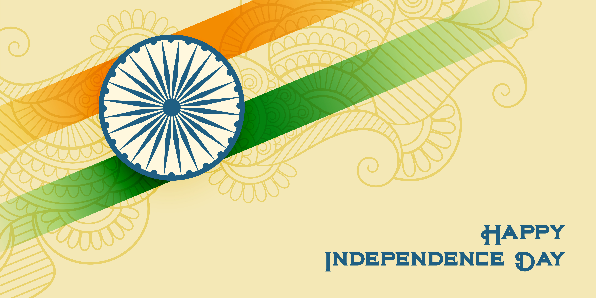
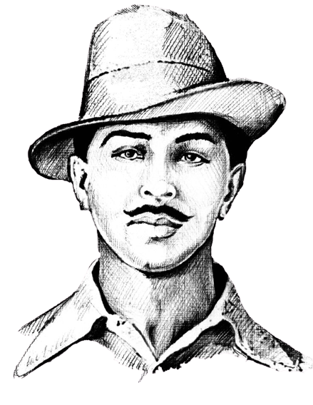
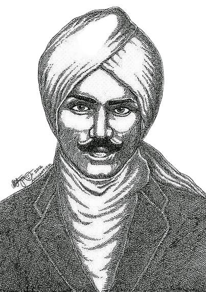
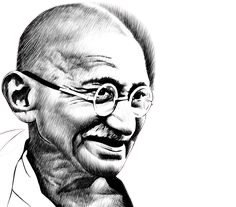
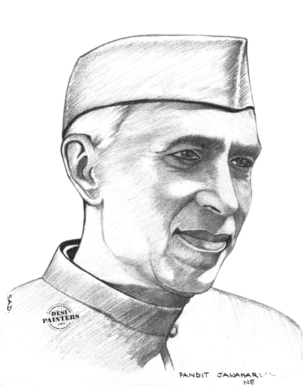

The story of Indian independence is a rich tapestry of struggle, sacrifice, and triumph. It represents a momentous chapter in global history where the ideals of freedom and self-determination prevailed. As India continues to grow and evolve, the lessons and spirit of its independence movement remain a guiding force, reflecting the enduring quest for justice and dignity.

Real hero's of India

LearnMore..
Bhagath Singh
(27 Sept 1907 – 23 Mar 1931)
was a charismatic Indian revolutionary[3] who participated in the mistaken murder of a junior British police officer[4] in what was to be retaliation for the death of an Indian nationalist.[5] He later took part in a largely symbolic bombing of the Central Legislative Assembly in Delhi and a hunger strike in jail, which—on the back of sympathetic coverage in Indian-owned newspapers—turned him into a household name in the Punjab region, and after his execution at age 23 into a martyr and folk hero in Northern India.[6] Borrowing ideas from Bolshevism and anarchism,[7] he electrified a growing militancy in India in the 1930s, and prompted urgent introspection within the Indian National Congress's nonviolent but eventually successful campaign for India's independence.
LearnMore..

LearnMore..
Subramania Bharati
(11 Dec 1882 – 11 Sept 1921)
was a Tamil writer, poet, journalist, Indian independence activist, social reformer and polyglot. He was bestowed the title "Bharathi" for his excellence in poetry. He was a pioneer of modern Tamil poetry and is considered one of the greatest Tamil literary figures of all time. He is popularly known by his mononymous title "Bharathi/ Bharathiyaar," and also by the other title "Mahakavi Bharathi" ("the great poet Bharathi"). His numerous works included fiery songs kindling patriotism during the Indian Independence movement.[2][3] He fought for the emancipation of women, against child marriage, vehemently opposed the caste system, and stood for reforming society and religion. He was also in solidarity with Dalits and Muslims.[4][5]
LearnMore..

LearnMore..
Mahatma Gandhi
(2 Oct 1869 – 30 Jan 1948)
was an Indian lawyer, anti-colonial nationalist and political ethicist who employed nonviolent resistance to lead the successful campaign for India's independence from British rule. He inspired movements for civil rights and freedom across the world. The honorific Mahātmā (Sanskrit: "great-souled", "venerable"), first applied to him in South Africa in 1914, is now used throughout the world. Born and raised in a Hindu family in coastal Gujarat, Gandhi trained in the law at the Inner Temple, London, and was called to the bar at age 22 in June 1891. After two uncertain years in India, where he was unable to start a successful law practice, he moved to South Africa in 1893 to represent an Indian merchant in a lawsuit. He went on to live in South Africa for 21 years. It was here that Gandhi raised a family and first employed nonviolent resistance in a campaign for civil rights.
LearnMore..

LearnMore..
Jawaharlal Nehru
(14 Nov 1889 – 27 May 1964)
was an Indian anti-colonial nationalist, secular humanist, social democrat,[2] and author who was a central figure in India during the middle of the 20th century. Nehru was a principal leader of the Indian nationalist movement in the 1930s and 1940s. Upon India's independence in 1947, he served as the country's prime minister for 16 years. Nehru promoted parliamentary democracy, secularism, and science and technology during the 1950s, powerfully influencing India's arc as a modern nation. In international affairs, he steered India clear of the two blocs of the Cold War. A well-regarded author, his books written in prison, such as Letters from a Father to His Daughter (1929), An Autobiography (1936) and The Discovery of India (1946), have been read around the world. The honorific Pandit has been commonly applied before his name.
LearnMore..
''Honoring Our Past Shaping Our Future''
Join us for an engaging seminar titled "Our Past and Shaping Our Future," presented by a filmmaker renowned for his patriotic films. Discover the history of our nation's independence on August 15, 2024. Seats are limited, so register now to be part of this insightful event! Registration Below...
Guest of Honor
President
Prime-minister
Chairman of the Board
Chief Executive Officer (CEO)
Chief Financial Officer (CFO)
Introduction of cheif-guest
Speech of Leader
Flag-Hoisting
Public Topics
Events
National Anthem
Army-Events
Navy-Events
Air-Force Eventa
Help
Privacy
Contact Details
Pre-Booking
Key Events: Flag Hoisting: The national flag is hoisted, and the national anthem is sung. Parades: Military and cultural parades take place in major cities. Cultural Programs: Various events showcasing India's diverse culture, history, and achievements are organized. Speeches and Ceremonies: Leaders and dignitaries deliver speeches highlighting the significance of freedom and national progress.
Government of India Official Portal

National Vloggers

India's Pride

Proud to be indian